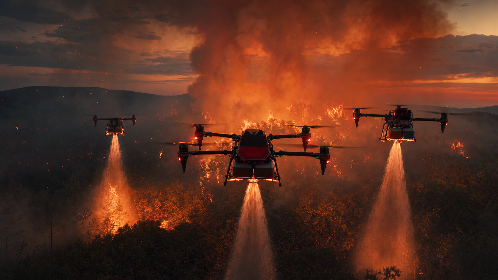

01
High-rise floor fires
Above the 30th storey, ladder trucks become spectators. Our drones deliver 500L of water or AFFF foam directly to the burning floor's external opening within minutes of arrival.
Skyline's firefighting division puts water and foam on fires that ground crews can't reach — high-rise floor fires above the 30th storey, industrial blazes hot enough to push trucks back, and wildland fronts moving faster than a hose can be laid. First water-on-fire in under six minutes.
Each response plan is pre-built with the local Bureau of Fire Protection unit, the property owner, and our pilots — so the drones launch the moment dispatch is called.
Above the 30th storey, ladder trucks become spectators. Our drones deliver 500L of water or AFFF foam directly to the burning floor's external opening within minutes of arrival.

Tank-top fires, flare-stack incidents, and process-unit blazes. Drones operate inside the radiant-heat zone where ground crews would be pushed back. Foam-compatible nozzle.

Logistics hubs, food plants, factory roofs. Through-the-roof water lance reaches the fire seat without breaching the building or risking truss collapse on responders below.

Mountain ridges and plantation fires where road access is hours away. Three-drone swarm lays water and retardant along the flame front while ground crews build line.

Dense urban blocks where trucks can't enter. Drones drop water from above and provide live thermal mapping so BFP commanders can stage evacuation lines accurately.

Highway tanker rollovers, fuel-depot incidents, port-side spills. Foam blanket applied from a safe approach angle. Live thermal feed to incident command.

Roof-deck and concourse fires at PhilSports / MOA scale. Drone-delivered foam reaches the membrane apex without rope crews entering a smoke-charged void.

Cable-stayed bridges, overpass column fires, electrical substations. Contactless suppression — no rope rescue or confined-space entry under structural load.
Skyline's firefighting drones are tethered, heavy-payload platforms capable of carrying 500 litres of water or AFFF foam per cycle, with continuous resupply from a ground-based pump truck. Thermal vision is fused with the pilot view so we can see the seat of the fire through smoke.
Continuous power and fluid supply from a ground rig. No mid-air refill, no battery swap mid-attack.
FLIR thermal overlaid on 4K visual feed. The pilot sees the burning core through smoke and external cladding.
AFFF and CAFS compatible. Calibrated for high-pressure pattern at 60–80 PSI through a fan or straight stream.
2 cm horizontal accuracy — even in updraft and crosswind from the fire itself. Drone holds the window line.
Telemetry, thermal, and visual streamed to the BFP incident commander on a ruggedised tablet at the truck.
BFP or property dispatch hits our hotline. Pre-built response plan auto-loads on pilot tablets.
Ground rig and two drones depart the staging hub. Pre-position contracts reduce arrival to under 8 min.
Drones tethered to pump truck. Thermal lock on fire seat. RTK station hold against fire-induced wind.
Water or foam delivered directly to the seat. Continuous re-supply from the rig means no cycle break.
Incident PDF for BFP and property: timeline, thermal video, payload usage, recommended overhaul.
Firefighting is a pre-positioned service — not a callout. We embed with BFP units, property groups, and industrial operators before an incident, so dispatch-to-water is a measured number, not a hope.
Memorandum of agreement with the local Bureau of Fire Protection unit. Joint exercises. Shared incident plans.
Retainer for premium high-rise, mixed-use, and industrial portfolios. Guaranteed response window. Site survey and pre-built response plan included.
Refineries, depots, plants, warehouses. Site-specific foam strategy and dedicated standby crew during shutdown and turnaround.
Walk us through your property or BFP unit. We'll deliver a written response plan in two weeks.